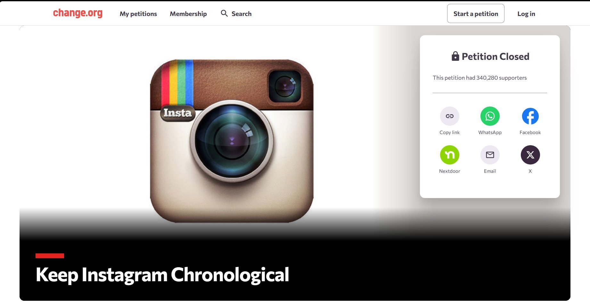

Change.org petition created March 16, 2016, gathering over 340,000 signatures against Instagram's algorithmic feed
This petition created by Sarah Heard one day after Instagram announced that they were switching from chronological to algorithmic feeds. The main argument was that such algorithms would disadvantage small creators and businesses.
The language used in the petition emphasized "choice," showing that many understood the fundamental loss of control algorithmic feeds represented. Ironically, the petition spread primarily through Instagram, which users had to use the platform they were protesting to gain support. Despite the large number of signatures the petition had gained and the number of users who were against the switch, Instagram implemented the algorithm anyway.
The attention economy where users aren't customers they're the product sold to advertisers, that is what this outcome brought to light. Platforms can essentially ignore hundreds of thousands of signatures because such user preference doesn't drive or benefit their business decisions. Later on research on TikTok confirmed this pattern of maximizing engagement over user control and that continues to negatively effect user well being like mental health, sleep quality, and cognitive function outcomes (Haque, 2026).
In conclusion, this demonstrates the power imbalance between platforms and their users showing that many resisted such change, but the engagement maximizing algorithm was still imposed.